File: 000870.gt.txt (if the image is defective, simply delete all Arabic text and the line will be excluded)
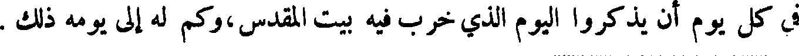
في كل يوم أن يذكروا اليوم الذي خرب فيه بيت المقدس،وكم له إلى يومه ذلك .
File: 000871.gt.txt (if the image is defective, simply delete all Arabic text and the line will be excluded)
السنن والقضاء ، فتعملوا بذلك في الأرض التي تصيرون إليها ، فاحتفظوا بأنفسكم
File: 000872.gt.txt (if the image is defective, simply delete all Arabic text and the line will be excluded)
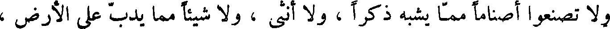
ولا تصنعوا أصناما مما يشبه ذكرا ، و لا أنثى ، ولا شيئا مما يدب على الأرض
File: 000873.gt.txt (if the image is defective, simply delete all Arabic text and the line will be excluded)
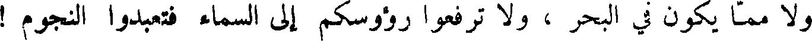
و لا مما يكون في البحر ، و لا ترفعوا رؤوسكم إلى السماء فتعبدوا النجوم !
File: 000874.gt.txt (if the image is defective, simply delete all Arabic text and the line will be excluded)
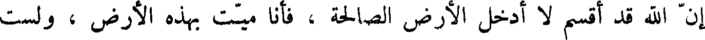
إن الله قد أقسم لا أدخل الأرض الصالحة ، فأنا ميت بهذه الأرض ، ولست
File: 000875.gt.txt (if the image is defective, simply delete all Arabic text and the line will be excluded)
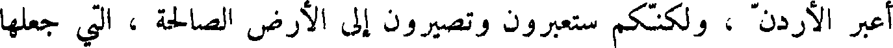
اعبر الأردن ، ولكنكم ستعبرون وتصيرون إلى الأرض الصالحة ، التي جعلها
File: 000876.gt.txt (if the image is defective, simply delete all Arabic text and the line will be excluded)
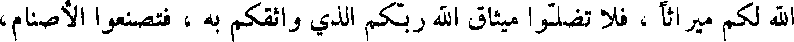
الله لكم ميراثا ، فلا تضلوا ميثاق الله ربكم الذي واثقكم به ، فتصنعوا الأصنام،
File: 000877.gt.txt (if the image is defective, simply delete all Arabic text and the line will be excluded)
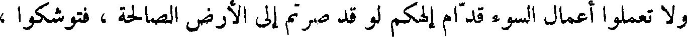
و لا تعملوا أعمال السوء قدام ألهكم لو صرتم إلى الأرض الصالحة ، فتوشكوا ،
File: 000878.gt.txt (if the image is defective, simply delete all Arabic text and the line will be excluded)
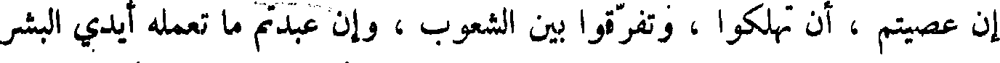
أن عصيتم ، أن تهلكوا ، وتفرقوا بين الشعوب ، وان عبدتم ما تعمله أيدي البشر
File: 000879.gt.txt (if the image is defective, simply delete all Arabic text and the line will be excluded)
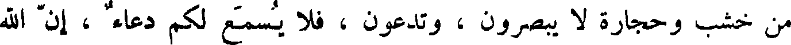
من خشب وحجارة لا يبصرون ، وتدعون ، فلا يسمع لكم دعاء ، أن الله
File: 000880.gt.txt (if the image is defective, simply delete all Arabic text and the line will be excluded)
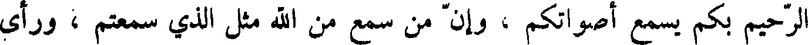
الرحيم بكم يسمع أصواتكم ، وان من سمع من الله مثل الذي سمعتم ، ورأى
File: 000881.gt.txt (if the image is defective, simply delete all Arabic text and the line will be excluded)
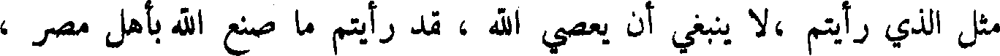
مثل الذي رايتم ،لا ينبغي أن يعصي الله ، قد رأيتم ما صنع الله بأهل مصر ،
File: 000882.gt.txt (if the image is defective, simply delete all Arabic text and the line will be excluded)
وأنتم تنظرون ، فان الله هو الرب الذي ليس غيره ، الذي بصركم ناره ،
File: 000883.gt.txt (if the image is defective, simply delete all Arabic text and the line will be excluded)
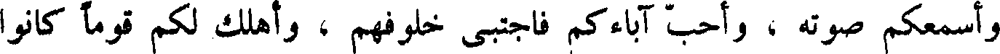
وأسمعكم صوته ، واحب آباءكم فاجتبى خلوفهم ، وأهلك لكم قوما كانوا
File: 000884.gt.txt (if the image is defective, simply delete all Arabic text and the line will be excluded)
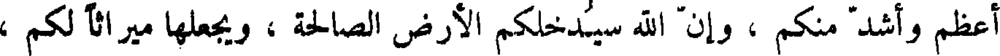
اعظم واشد منكم ، وان الله سيدخلكم الأرض الصالحة ، ويجعلها ميراثا لكم ،
File: 000885.gt.txt (if the image is defective, simply delete all Arabic text and the line will be excluded)
فاحفظوا سننه التي أوصاكم بها وأمركم بها ليحسن إليكم والى خلفكم من
File: 000886.gt.txt (if the image is defective, simply delete all Arabic text and the line will be excluded)
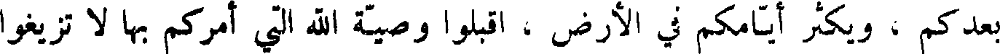
بعدكم ، ويكثر أيامكم في الأرض ، اقبلوا وصية الله التي أمركم بها لا تزيغوا
File: 000887.gt.txt (if the image is defective, simply delete all Arabic text and the line will be excluded)
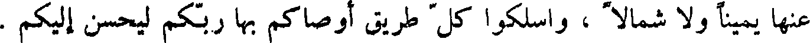
عنها يمينا و لا شمالا ، واسلكوا كل طريق أوصاكم بها ربكم ليحسن إليكم .
File: 000888.gt.txt (if the image is defective, simply delete all Arabic text and the line will be excluded)
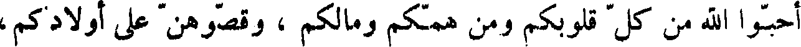
احبوا الله من كل قلوبكم ومن همكم ومالكم ، وقصوهن على أولادكم،
File: 000889.gt.txt (if the image is defective, simply delete all Arabic text and the line will be excluded)
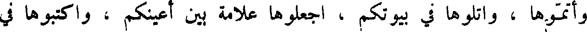
وأتموها ، واتلوها في بيوتكم ، اجعلوها علامة بين أعينكم ، واكتبوها في
File: 000890.gt.txt (if the image is defective, simply delete all Arabic text and the line will be excluded)
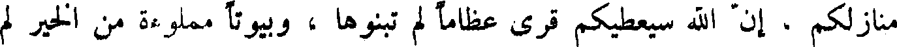
منازلكم ، أن الله سيعطيكم قرى عظاما لم تبنوها ، وبيوتا مملوءة من الخير لم
File: 000891.gt.txt (if the image is defective, simply delete all Arabic text and the line will be excluded)
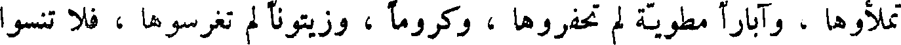
تملأوها ، وآبارا مطوية لم تحفروها ، وكروما ، وزيتونا لم تغرسوها ، فلا تنسوا
File: 000892.gt.txt (if the image is defective, simply delete all Arabic text and the line will be excluded)
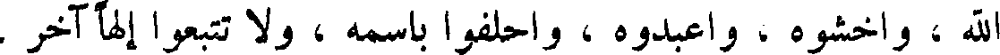
الله ، واخشوه ، واعبدوه ، واحلفوا باسمه ، ولا تتبعوا ألها آخر .
File: 000893.gt.txt (if the image is defective, simply delete all Arabic text and the line will be excluded)
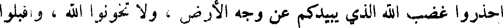
احذروا غضب الله الذي يبيدكم عن وجه الأرض ، ولا تخونوا الله ، واقبلوا
File: 000894.gt.txt (if the image is defective, simply delete all Arabic text and the line will be excluded)
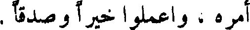
أمره ، واعملوا خيرا و صدقا .
File: 000895.gt.txt (if the image is defective, simply delete all Arabic text and the line will be excluded)
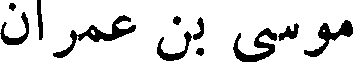
موسى بن عمران
File: 000896.gt.txt (if the image is defective, simply delete all Arabic text and the line will be excluded)
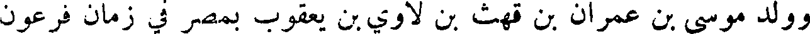
وولد موسى بن عمران بن قهث بن لاوي بن يعقوب بمصر في زمان فرعون
File: 000897.gt.txt (if the image is defective, simply delete all Arabic text and the line will be excluded)
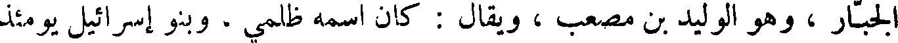
الجبار ، وهو الوليد بن مصعب ، ويقال : كان اسمه ظلمي ، وبنو إسرائيل يومئذ
File: 000898.gt.txt (if the image is defective, simply delete all Arabic text and the line will be excluded)
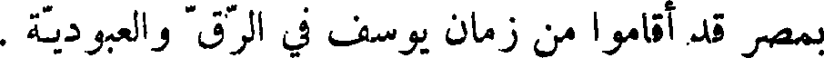
بمصر قد أقاموا من زمان يوسف في الرق والعبودية .
File: 000899.gt.txt (if the image is defective, simply delete all Arabic text and the line will be excluded)
وكان سحرة فرعون وكهنته قد قالوا له : يولد في هذا الوقت مولود من بني
To Save: `Ctrl+s`, make sure to choose `Webpage, complete`!